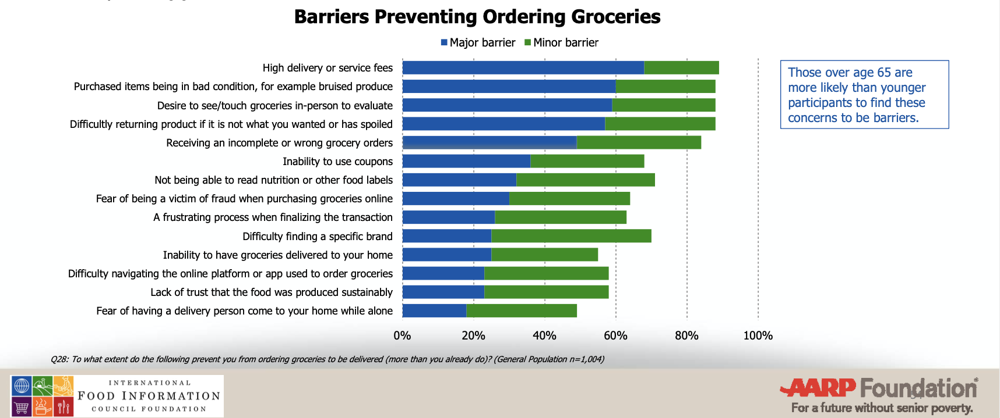

PROduce Marketplace
Designing online grocery shopping experience for senior citizens
We wanted to do something for our grandmas and grandpas. Instead of going to a nursing home, “aging in place” is a common wish for many senior people. For example, they enjoy going to grocery stores, picking up their own produce and chatting with those lovely people at the store. They also love to cook a healthy meal for themselves and also their loved ones at home. However, even these simple tasks may get really difficult when they are getting older. We want to make it easier for them to live an independent and happy life at their own place.
3 months
Service Designer
Service Design
Discovering design opportunities
Starting from questions
When we started the project, we agreed on an initial idea of exploring senior people's online shopping experience, especially grocery shopping experience. We came up with a set of interview questions and arranged phone interviews with 18 senior people over the age of 65.
Aggregating research results
After the interviews we did an affinity diagram in order to aggregate our major findings.
This made it more effective for us to share the research findings and allowed us to focus our discussions on the most important insights.
We found some interesting patterns in our affinity diagram. Most of our research participants do some kind of online shopping. However, when it comes to grocery shopping, most of them prefer going to a physical store for a few common reasons:
They like to touch and feel the product.
They want to ensure the quality of the product they are selecting. But interestingly, some participants told us that they just simply enjoy the experience of seeing and touching the product.They like to have social interactions in the community.
They may like to communicate with the butcher about how to cook a certain type of meat, or ask a cheesemonger to help choose a cheese for the meal. They like the feeling of being in the community.They get reminded of what to buy.
When they walk through the shelves in the grocery store, they would usually come across items that they forget to write down in their shopping list.We came to a conclusion that quality, sensory and social aspects of shopping in store are the most important factors to many participants.
Analyzing user's journey
We also drew an user journey map to visualize the current online grocery shopping process. It also helped us to better understand when those problems occur in the user's journey and identify any other details that cannot be well reflected in the affinity diagram.

Defining target users
We were surprised by the research results
Before we did our user research, we had some assumptions based on our own observations. We thought that senior citizens may not be familiar with technologies at all, or they are afraid of using technologies for some reasons. The research result totally surprised us. Some senior people are even more tech-savvy than me!
Some reflections & trade-offs
On the one hand, we thought that it was because we had limited contact with the senior citizens, that our participant group may not be a overall representative of the senior citizens here in the Seattle area, not to say the whole United States. On the other hand, given the constraints, we felt that this is also a large group of senior citizens, who seems to be able to benefit a lot from online grocery services. Since they are already familiar with online technologies, it would be easier for them to adopt a bit more in order to make their life easier.
"Yes, but" users
Based on the user research, we decided to focus on senior citizens who are already familiar with online shopping technologies but haven't had the habit of shopping groceries online due to various reasons.

To be more inclusive, we also considered a relatively small but important user group, who have mobility issues and would probably benefit the most from improved online grocery delivery services.

Addressing problems and needs
We listed down all the pain points and attractors regarding senior people's online grocery shopping experience, and used a value proposition canvas to facilitate our brainstorming activities. We came up with key features to address the major pain points.

VR shopping - making up the sensory aspect of online shopping
We had some wild ideas such as using VR technologies to simulate the real experience of shopping in the grocery store. We think that this may be a good solution in the near future, but for now we also have some alternative solutions such as having more high-resolution images to allow users to have a closer look at the products from various angles.Produce directly from farmers - building trust for quality
Some of our participants mentioned that they buy produce from farmers market. According to our research results, it seemed that produce directly from farmers adds another layer of trust for the quality of the produce.Online community & expert advice - encouraging social interactions
When we analyzed some similar products, we were inspired by the feature of buying groceries by recipes. This would allow users to communicate in an online community about their recipes and also get better ideas of what to buy. Moreover, we want to have food experts on our platform, such as cheesemongers, and butchers to answer customers' questions, which simulates the communication in a grocery store.More secondary research
Reflections on the timing of secondary research
If given a second chance, I would do this at the very first stage of our design process. We focused too much on the process and conducting our own qualitative research at the beginning, but was only reminded to also conduct some secondary research at a later stage. If we have done this earlier, we would be able to know more about general online grocery shopping behaviors, pain points and needs of senior citizens. We would also have more valid assumptions and ask more specific and detailed questions during the interview based on both the quantitative and qualitative secondary research.
Luckily it's not too late
We did some secondary research and surprisingly found out many results are aligned with our own interview results. We extracted some useful information: 
Cost remains the biggest hurdle
With close to 70% of shoppers who have not bought groceries online citing high delivery and service fees as a major obstacle.Quality concerns & desire to hand pick their own foods
Concerns over quality and freshness, and the desire to hand select their own foods are the top barriers to online grocery ordering.Being health conscious impact shopping habits
Despite their tendency to be health conscious only three in ten find it easy to maintain a healthy diet and lifestyle. Older Americans with groceries delivered are also more inclined to cite meal preparation as a challenge.Designing experience as a whole
Having the lean canvas allowed us to think about not only the product itself, but the experience of the whole service provided to our users in the given context. For example:
Thinking about unique ways to address the problems
Examining existing alternatives and thinking about unfair advantage urged us to think about how our product and service can be really unique and helpful to the target users. We were also inspired by some products in the market. For example, Imperfect Foods inspired to think about having produce directly from farmers. And we think further to include food experts such as cheesemongers and butchers in our service.Innovate on business model and the corresponding services
For example, given the secondary research that many senior citizens pay much attention to their health and having difficulties with meal planning, we discussed about waiving delivery fee but instead having users subscribe to healthy recipes. This may make users feel that their money are well spent on something more valuable to them.Refining the entire service
Prototyping the experience
Desktop first
Although we designed our website to be responsive, we did prototype for the web version of desktop size first, because our research suggested that users in the seniors market prefer using desktop when shopping online because they can see the product in larger detail.
Highlights of the prototype
- Large, rich photos emphasizing quality of product to entice the customer.
- Produce can be selected according to personal preferences: ripeness, cuts of meat, etc.
- A community recipe section allows shoppers to share recipes and add ingredients to their shopping cart in one click.
- Chat with food experts to choose the best products for the meals.
Testing the prototype
Do it rapidly
We decided to go with a simple clickable prototype to test in the market. We simulated the user's interactions with the food experts on the website by acting as the experts on the website and answering user's problems. We thought this would be an quick yet effective way to prototype and iterate on the interaction experience.
Prototype in use
User feedbacks
We asked the user to fill up a lightweight journey map in order to know which steps the user remembers and the user's experience in those steps. The user was then asked to go through the lightweight journey map together with us to explain more details.
User describing his experience
Learnings and reflections
There are always some constraints in the project, such as having limited access to people we intended to help. We have to be flexibile and figure out how to deal with the constraints.
The results of user research can be very different from our initial assumptions. But this is exactly why we need to do user research! Our assumptions can be a good starting point, but we should never stick to it if it is proven to be wrong.
The emphasis on designing a holistic service and having a better overall experience really made the whole design different. I was able to jump out of the box of just designing features to really think about how the user experience developes across time across multiple touchpoints during the whole service period.
We focused a lot on the product and service side of the design, but did not pay enough attention to some detailed concerns regarding interaction. For example, accessibility should be an important consideration when designing for senior citizens.
Designing solutions to improve people's lives is always why I am passionate about UX.
During an interview, I remember that a lady with mobility issue told me about her idea of redesigning the grocery store for disabled customers like her. That made me realize that there are still so many untackled problems out there in the world, and there are so many people waiting for others or technology to help. That's why I'm here to design.
Last but not least, I really appreciate all the help from our interview participants, and efforts of our fantanstic team members. And thanks for reading! :)